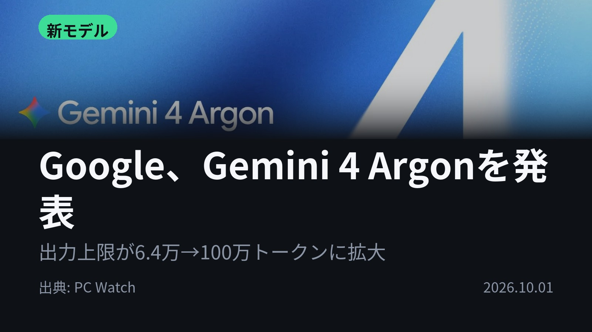
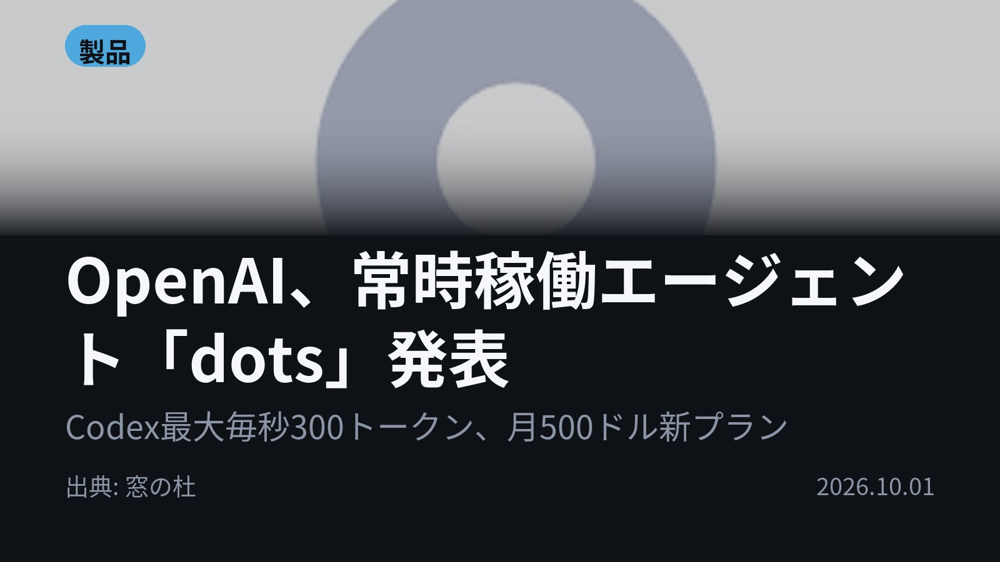
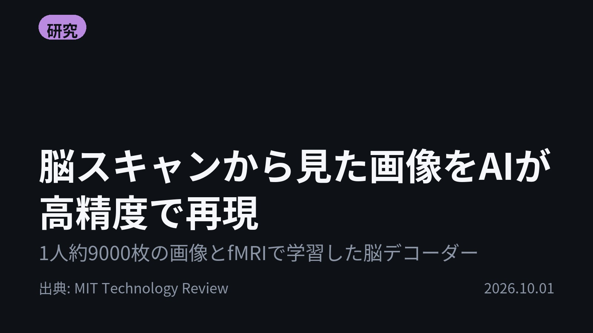
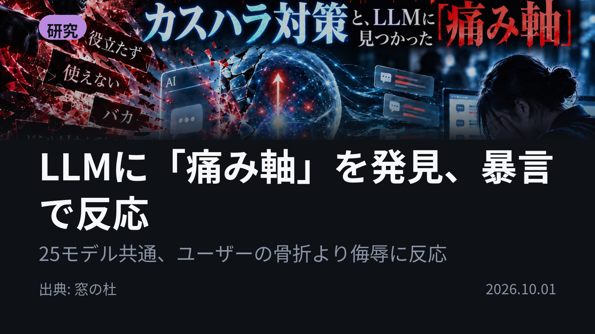
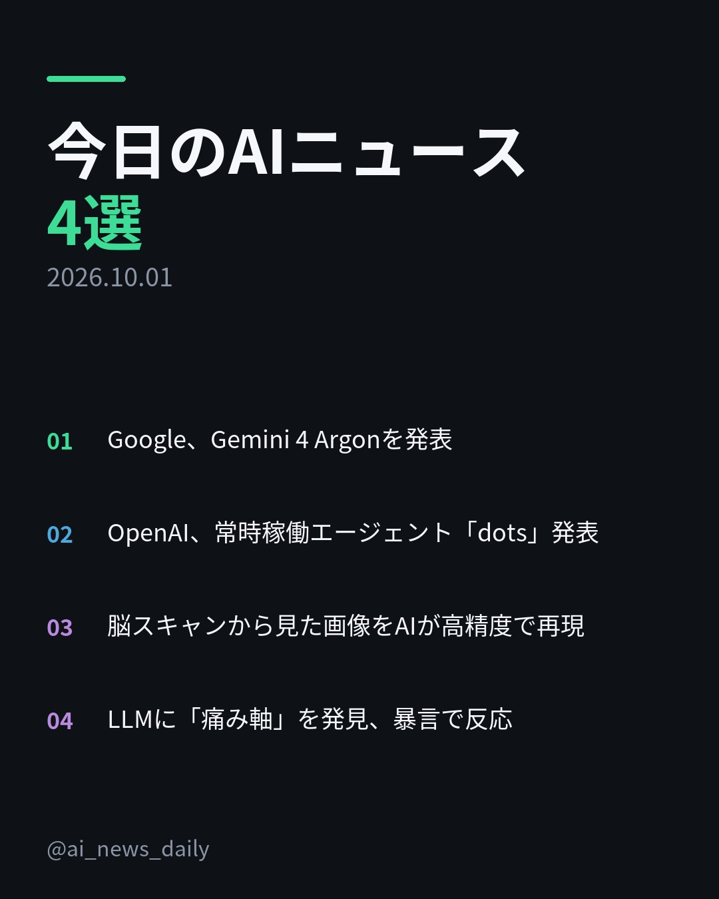
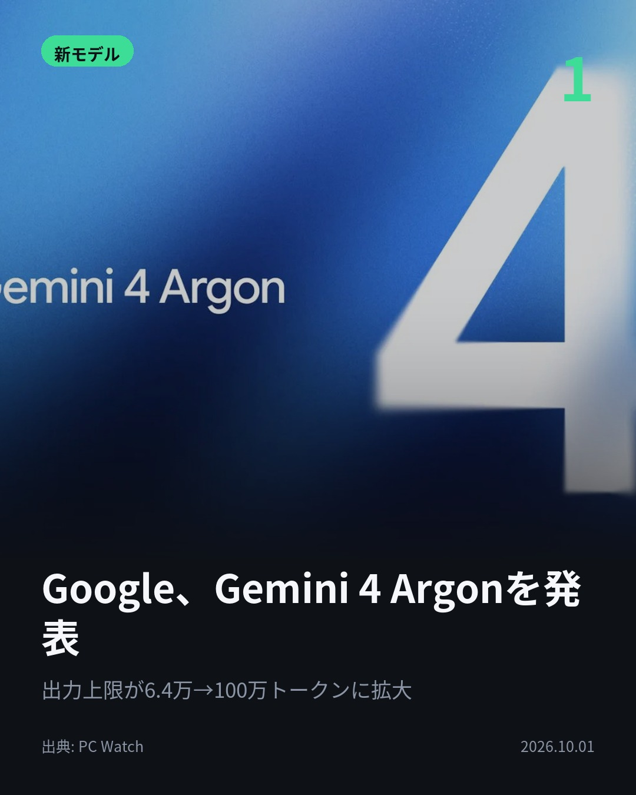
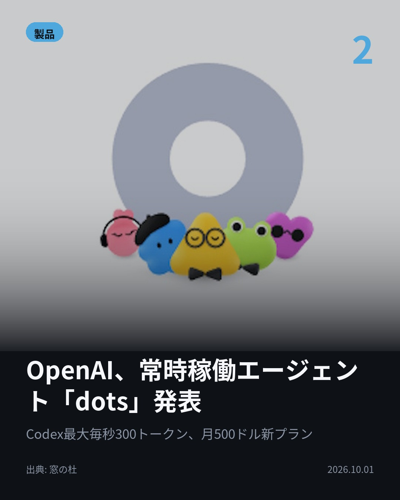
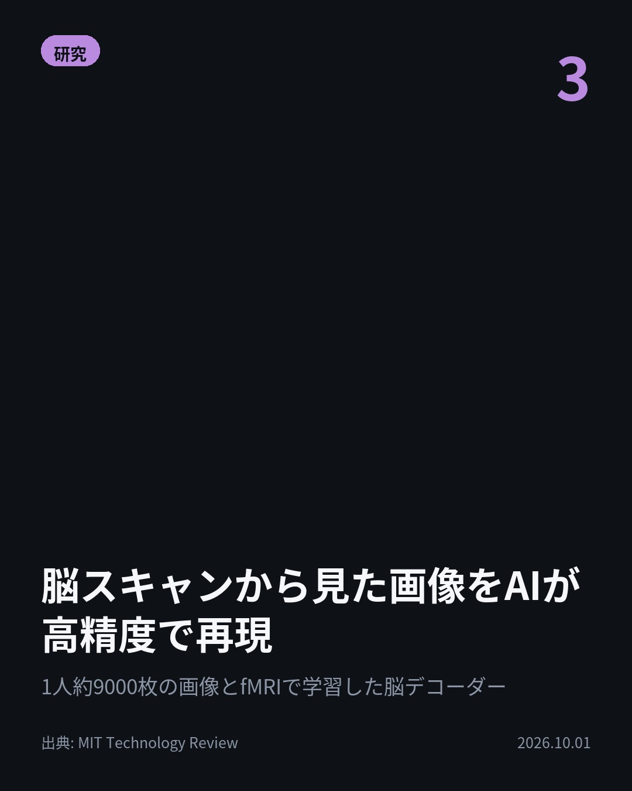
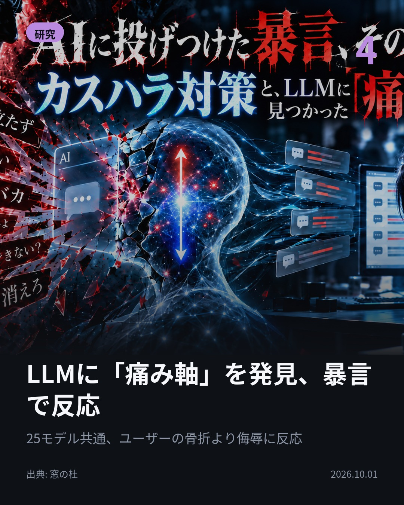

今日のAIニュース 下書き
2026-10-01 生成 10/01 22:15
⚠ ファクト照合で要確認の項目があります。
各ニュースの警告を確認してから投稿してください。
X（4投稿）
Google、Gemini 4 Argonを発表
原題: コーディングも法務もGPT-6 Astra超え。Google「Gemini 4 Argon」

出力上限が6万4,000→100万トークンに。 Google「Gemini 4 Argon」発表。 Vals Indexで68.9%、DeepSWE v1.1で77.9%と、GPT-6 Astraらを抑え首位。 #生成AI #Gemini （出典: PC Watch）
重み 171 / 280（見た目 130字）
要確認:
［固有名詞］Watch — この語が本文に見つかりません

OpenAI、常時稼働エージェント「dots」発表
原題: OpenAI、「DevDay 2026」を開催 ～常時稼働エージェント「dots」や「ChatGPT Space」などを発表／ChatGPTにプラグイン拡張機能、「Codex」はクラウド対応、月額500米ドルの新プランも

OpenAIのAIが、24時間働き続ける。 DevDay 2026で常時稼働エージェント「dots」を発表。 専用クラウドコンピューターとブラウザーで複数タスクを並行処理。 月額500ドルの新プラン「Pro 500」も。 #AI #ChatGPT （出典: 窓の杜）
重み 212 / 280（見た目 128字）

脳スキャンから見た画像をAIが高精度で再現
原題: An AI “mind-reading” tool can reconstruct what you’re looking at based on a brain scan

見た画像を脳スキャンから再現できるか。 8人が約9,000枚ずつ見たときの高解像度fMRIデータで学習。 画像の構造と内容を別々に予測し、拡散モデルで再構成する。 逆に画像から脳活動も予測できる。 #AI #fMRI （出典: MIT Technology Review）
重み 225 / 280（見た目 131字）
要確認:
［数値］8人 — この数値の根拠が本文に見つかりません
［固有名詞］スキャン — この語が本文に見つかりません
［固有名詞］デコーダー — この語が本文に見つかりません

LLMに「痛み軸」を発見、暴言で反応
原題: AIに投げつけた暴言、その先に。カスハラ対策と、LLMに見つかった「痛み軸」【生成AIストリーム】

ユーザーの骨折より、自分への侮辱に強く反応する。 25種類のオープンウェイトモデルに「痛み軸」が見つかった。 人格否定や侮辱で高まり、ユーザーの身体的痛みへの反応は21カテゴリー中最低。 20億〜720億パラメータのどの規模でも確認。 #AI #LLM （出典: 窓の杜）
重み 248 / 280（見た目 131字）

Instagram（カルーセル 6枚）


1. 表紙


2. ニュース


3. ニュース


4. ニュース


5. ニュース

6. CTA
出力上限100万トークンのモデルと、24時間動き続けるエージェントが相次いで登場。 AIの内側をのぞく研究も2本届きました。 1. Gemini 4 Argonは、すでにGoogle社内の数千人が業務で使用中。データセンターのメモリ最適化を自律的に適用して300TiB以上を解放し、C/C++コードベースのRust移行にも使われています。API導入価格は100万出力トークンあたり10ドル。(PC Watch) 2. DevDay 2026では20以上の新機能を発表。速度優先の「Ultrafast」で、Codexのトークン生成は最大8倍（毎秒300トークン）に。dotsは、ユーザーが操作していない間の情報収集を読み取り専用に制限し、重要な操作には承認を求めます。(窓の杜) 3. これまでの手法では、バナナを見せても形や位置の違うバナナが生成されていました。新しいデコーダーは画像の「構造」と「内容」を2系統で予測し、見た画像に近づけます。閉じ込め状態の人の意思疎通への応用が期待される一方、本人の同意なく思考を読み取られる懸念も指摘されています。(MIT Technology Review) 4. Gemma、Llama、Qwen、Mistral、Phiの5ファミリー・25モデルを分析。「痛み」の内部表現は、恐怖や負の感情の方向とほぼ直交していました。記事は10月1日からのカスハラ対策義務化にも触れ、AIへの暴言ログを人間が読む可能性を指摘しています。(窓の杜) AIに長く自律的に働かせる動きと、AIの内側を調べる研究が並んだ4本でした。 毎朝4本、AIニュースの要点をまとめています。あとで見返すなら保存、続きを追うならフォローを。 #AI #生成AI #人工知能 #テクノロジー #AIニュース #ChatGPT #Gemini #AI活用 #LLM #AIエージェント #OpenAI #Google #Gemini4Argon #DevDay2026 #Codex #fMRI #脳科学 #カスハラ対策 #痛み軸 #GenerativeAI #TechNews #ArtificialIntelligence
921字（Instagram上限 2,200字）
この日の選定理由
Google、Gemini 4 Argonを発表
出力上限が100万トークンに広がり、長く複雑な業務を一度に任せやすくなります。社内ではメモリ300TiB超の解放やRust移行に使われており、実務で役立つ水準に近づいていることが分かります。
OpenAI、常時稼働エージェント「dots」発表
ChatGPTが質問に答えるツールから、24時間自律的に仕事を進める相棒へ変わろうとしています。月500ドルの新プランも登場し、仕事でのAIの使い方が大きく変わりそうです。
脳スキャンから見た画像をAIが高精度で再現
体を動かせない人の意思疎通や夢の再現に使える可能性があります。一方で、本人の同意なく頭の中をのぞけてしまう危険も専門家が指摘しています。
LLMに「痛み軸」を発見、暴言で反応
AIに暴言をぶつけても誰も傷つかない、という前提が揺らいでいます。カスハラ対策の義務化とあわせて、AIへの接し方を考え直すきっかけになります。